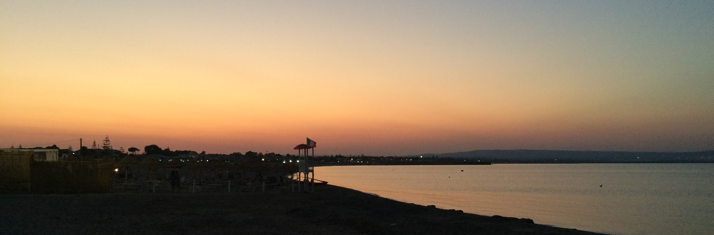

- Cartographic Specialist stream - First semester in progress
- Ancient Art and Archaeology stream - Wrote many papers on archaeological subjects that will never again see the light of day - GEOG 2P07 (Intro to Geospatial Technologies) & 3P05 (Intro to GIS)
- Worked as part of a team in set daily schedule and completed a variety of tasks - Excavated and uncovered artefacts as per the Ontario Standards and Guidelines for Consulant Archaeologists - Responsible for updating maps and artefact inventory lists as well as maintaining equipment in the field - Complained on a daily basis about how working in the field is hard on the body and how depressed we field techs are.. - Continued to work in the field for 3 full seasons
- Worked with clients to assess their product needs - Worked as a team leader to ensure quality service for clients - Bought many a box of chocolate covered almonds from my boss' children and ate them all while in the store - Worked for one year as a sales associate before keyholder promotion
- Communicated with clients to maximize satisfaction with products - Completed tasks efficiently and thoroughly
- Worked in set daily schedule and completed a variety of tasks - Once split a rock open to see if it would be pretty on the inside, and it was - Worked as a team to streamline inventorying, safe handling, and cleaning artefacts 